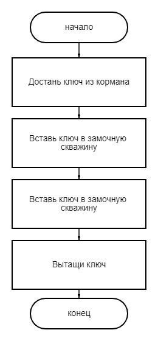
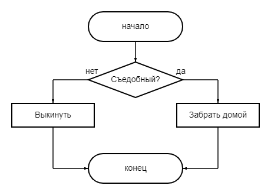
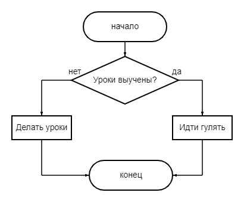
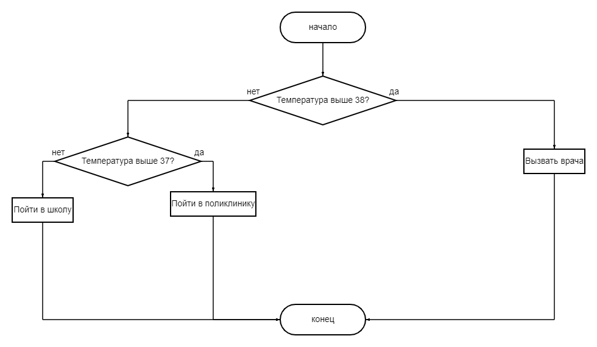
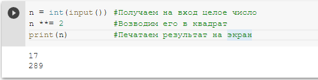
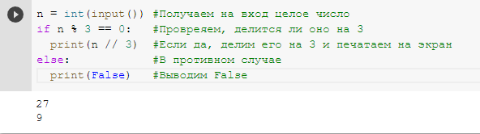
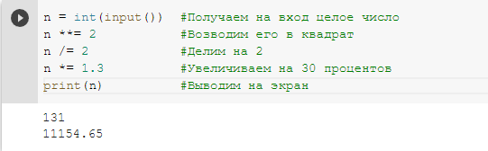
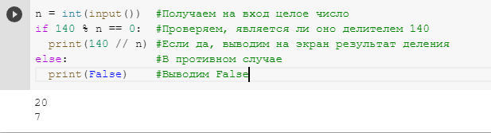

Понятие алгоритма
Понятие алгоритмаЛинейный алгоритмы и алгоритмы с условием
Линейный алгоритм - это алгоритм, в котором все действия выполняются последовательно одно за другим.
Простейший пример линейного алгоритма из жизни, который описывает процесс открытия двери:
- Начало
- Достань ключ из кормана
- Вставь ключ в замочную скважину
- Поверни ключ
- Вытащи ключ
- Конец
Данный алгоритм можно представить в виде следующей блок-схемы:
В нашей жизни редко встречаются ситуации, когда известна чёткая последовательность действий. Часто мы стоим перед выьором и принимаем решение в зависимости от ситуации. Именно для этого и сущесвуют алгоритмы с ветвлением.
Алгоритм с ветвлением - это алгоритм, в котором в зависимости от результатов проверки условия выполняется либо одно действие, либо другое.
Пример такого алгоритма - алгоритм сбора грибов:
В виде блок-схемы данный алгоритм будет выглядить следующем образом:
Как мы видим, основное отличие линейного алгоритма и алгоритма с ветвлением состоит в том, что в первом случае нам достаточно по порядку выполнять все действия, а во втором - наши действия зависят от определённого условия.
Алгоиритмы с ветвлением гораздо удобнее изображать в виде блок-схемы.
Как должно быть известно из предыдущих классов, в Python для написания алгоритмов с ветвлениями используется конструкция if: ... elif: ... else: ...
Задачи для объяснения
В качестве первой задачи для объяснения предлагается привести примеры линейных алгоритмов и алгоритмов с ветвлением из жини, например:
Линейные алгоритмы:
- Алгоритм посадки дерева:
- Начало
- Выкопать в земле ямку
- Опустить в ямку саженец
- Засыпать ямку с саженцами землёй
- Полить саженец водой
- Конец
- Алгоритм приготовления отвара шиповника:
- Начало
- Столовую ложку сушеных плодов шиповника измельчит в ступке
- Залить стаканом кипячёной воды
- Кипятить 10 мин. на слабом огне
- Охладить
- Процедить
- Конец
-
Алгоритм сбора в школу:
- Начало
- Встать
- Сделать зарядку
- Умыться
- Одеться
- Позавтракать
- Собрать портфель
- Конец
Алгоритмы с ветвлением:
- Алгоритм похода на прогулку: 
- Алгоритм вызова врача на дом: 
Второй задачей для объяснения, будет задача, в которой необходимо разработать на языке Python алгоритм, который принимает на вход число и выводит его квадрат.
Решение следующее: сначала опишем все действия по порядку на естественном языке:
- Программа начинает выполнение
- Программа принимает на вход целое число
- Программа возводить число в квадрат
- Программа выводит полученный результат на экран
- Программа завершает своё выполнение
Затем, записываем данный алгоритм в виде инструкций на языке программирования Python:
И наконец, третьей задачей для объяснения будет задания написать следующую программу на Python: программа принимает на вход целое число, если число делится на 3 без остатка, поделить его на 3 и напечатать результат, в противном случае вывести на экран False.
Решение: Как мы уже знаем, чтобы проверить делиться ли число на 3, надо взять остаток от деления и сравнить его с 0. Если остаток не равен 0, то число не делится на 3.
Вот как данная программа будет выглядит на Python:
Задачи для самостоятельного решения
Первой задачей для самостоятельного решения будет задача, которая предполагает написать программа на Python, выполняющую следующие действия:
- Программа начинает выполнение
- Программа принимает на вход целое число
- Программа возводить число в квадрат
- Прогрмма делит число на 2
- Программа увеличивает число на 30 процентов
- Программа выводит полученный результат на экран
- Программа завершает своё выполнение
Опредилить, к какому типу алгоритмов будет относится написанная программа.
Решение:
Как мы видим, данный алгоритм не содержит ни одного условия, а все действия в нём выполняется последовательно - значит, данный алгоритм является линейным.
Вторая задача для самостоятельного решения:
Составить программу на Python, которая проверяет, является ли полченное на вход целое число делителем числа 140. Если да, то программа выводит на экран результат деления числа 140 на полученное число, в противном случае выводит False.
Определить, к какому типу алгоритмов относится написанная программа.
Решение: чтобы проверить, является ли полученное число делителем числа 140, надо сравнить остаток от деления числа 140 на полученное число с 0. Если остаток не равен 0, то число делителем не является.
Вот как это будет выглядеть на языке программирования Python:
Как мы видим, действия в данном алгоритме зависят от некоторого условия, значит данный алгоритм является алгоритмом с ветвлением.